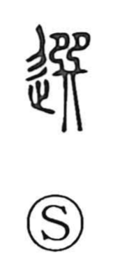

Explanation
選 is a phono-semantic character built on the phonetic 巽 (sen), which Shirakawa reads as the image of two figures standing in line and dancing on a sacred platform before the gods. From this scene of paired, orderly movement arose the sense of things matching and lining up true, and, because those who performed before the deities were chosen for the role, the meaning extended to selecting and choice. The Qi Airs of the Book of Odes says, “When they dance, it is xuan” (舞則選兮), evoking both the well-ordered alignment of the dance and its chosen quality. Related graphs in the same phonetic series illuminate this ritual background: 撰 speaks of offering dance and music and also of selecting, while 饌 names the wine and food set out as offerings.